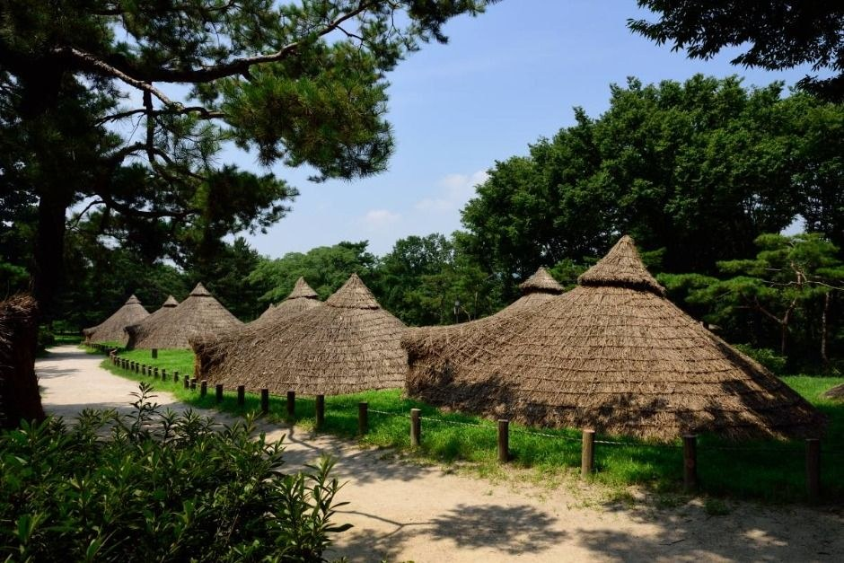
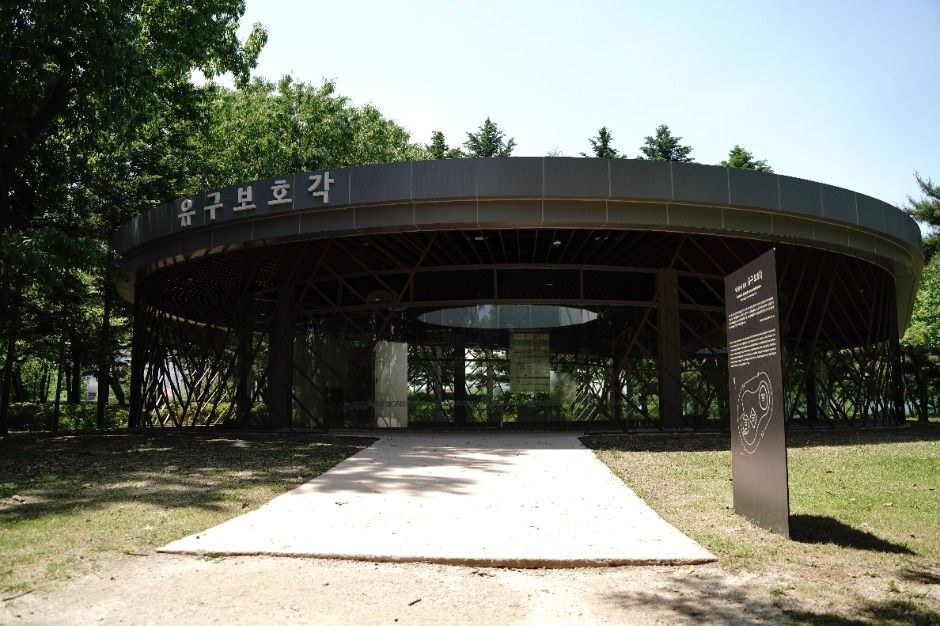
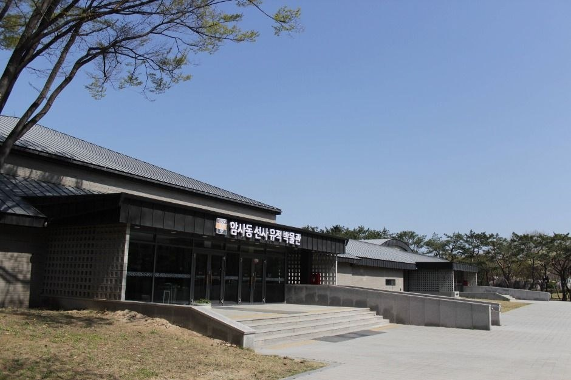
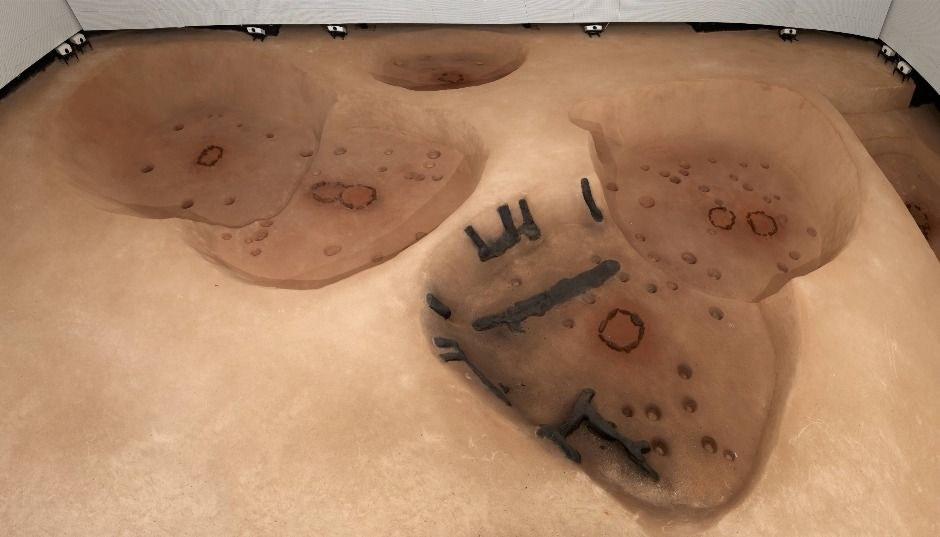
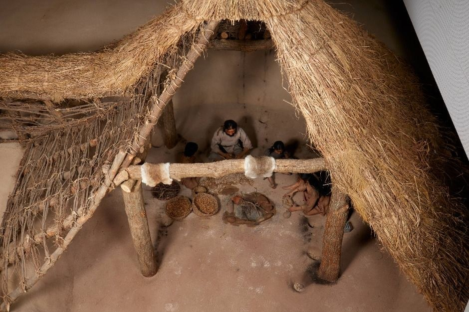
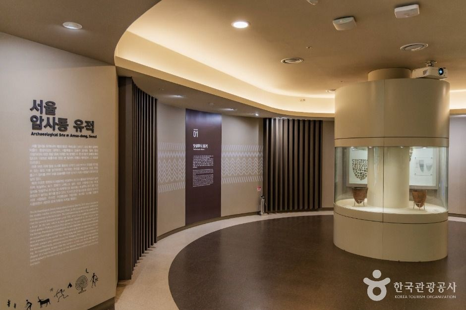
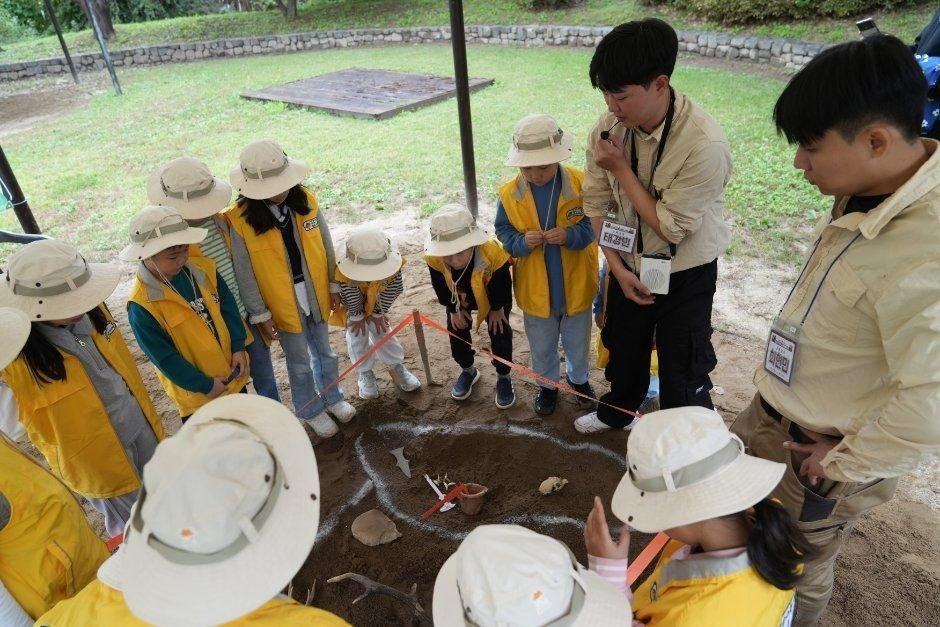

Amsa-dong Prehistoric Settlement Site Guide: Overview
This Amsa-dong Prehistoric Settlement Site guide takes you about 6,000 years back in time without leaving Seoul. The Seoul Amsa-dong Prehistoric Site (서울 암사동 유적) sits on the Han River in Gangdong-gu, east Seoul. It's the largest village-scale Neolithic settlement found in Korea, with restored thatched pit houses, a covered hall over real house floors and a museum full of comb-pattern pottery.
Tickets cost just ₩500, and Line 8's new Amsa History Park Station puts it about a 10-minute walk from the subway.

A Short History: Found by a 1925 Flood
The site came to light after the great Han River flood of 1925 washed away sand dunes and exposed piles of comb-pattern pottery (빗살무늬토기). It was designated a national historic site in 1979 and excavated between 1981 and 1988. Radiocarbon dating places it around 4000–3000 BCE, across three cultural layers. People here fished and gathered along the river; finds include stone axes, net sinkers and even charred acorns.
The houses were dug into the ground in round or rounded-square shapes, about 5–6m across and 70–100cm deep, with a stone-lined hearth in the center and entrances usually facing south. Today the protected area covers about 78,133㎡, with nine restored pit houses plus one you can walk into.


What to See: Pit Houses, Excavation Hall and Museum
- Restored pit houses: Thatched huts among pine trees, with one experience hut where you can step inside and see a hearth and tools.
- Excavation protection hall: A covered hall over real Neolithic house floors, so you see the actual dug-out outlines and hearths.
- Museum: The permanent exhibition shows comb-pattern pottery in many styles, plus tools and dig history. A small special exhibition about old Amsa village runs until December 20, 2026.
- Autumn walk: Olympic-ro next to the site has a 0.96km ginkgo-lined path that turns gold in early November.



Visitor Information
| Item | Details |
|---|---|
| Name | Seoul Amsa-dong Prehistoric Site (서울 암사동 유적) |
| Address | 875 Olympic-ro, Gangdong-gu, Seoul (서울 강동구 올림픽로 875) |
| Hours | 09:30–18:00 (last tickets 17:30) · free early-morning walking hours 06:00–09:00 (Oct–Mar) / 05:30–09:00 (Apr–Sep) |
| Closed | Mondays and January 1 (if Monday is a holiday, the next weekday) |
| Admission | Adults (19–64) ₩500 · Ages 7–18 ₩300 · Free for under-7s, 65+ and others eligible |
| Subway | Line 8 Amsa History Park Stn, Exit 3 (10 min walk) · Line 8 Amsa Stn, Exit 4 (15 min) |
| Bus | 3324 to 암사역사공원역3번출구 · 340/3411/3318 to 삼성광나루아파트 · village bus Gangdong 02 from Amsa Stn Exit 1 |
| Parking | Yes (about 105 spaces) · flat ₩2,000 for small cars |
| Phone | +82-2-3425-6520 |
| Website | sunsa.gangdong.go.kr |
Sources: Seoul Amsa-dong Prehistoric Site official website (Gangdong-gu), Visit Seoul and Korea Tourism Organization (한국관광공사). Photos © Korea Tourism Organization. We didn't add any AI-generated images. Hours and fees may change, so check before you go.
Gangdong Seonsa Culture Festival (Every October)
Every October the site hosts the Gangdong Seonsa Culture Festival (강동선사문화축제). The 31st edition ran October 16–18, 2026, with free entry to the grounds and some paid experiences: a prehistoric-style BBQ, a handcrafted market, a Neolithic archaeology school for kids, a media facade, a drone show and fireworks. If your trip falls in mid-October, it's worth planning around.

Rules and Tips for Your Visit
- It's a heritage site, not a park: no ball games, picnics/cooking, alcohol, bicycles, kick scooters or pets (guide dogs excepted). The whole site is non-smoking.
- Guided commentary runs at 10:00, 12:00, 14:00 and 16:00 (about 60 minutes; Korean, booked on the official site).
- Allow 1.5–2 hours for the huts, hall and museum.
- Combine it with the Amsa Green Road walkway to Gwangnaru Han River Park, or head to Jamsil and Lotte World Tower afterward.
- Avoid Mondays, and come in early November for the ginkgo trees.
Amsa-dong vs. Other Seoul History Spots
| Amsa-dong Prehistoric Site | Hongneung Forest | Sungnyemun Gate | |
|---|---|---|---|
| Era | Neolithic (~6,000 years ago) | 1922 research forest | Joseon dynasty |
| Area | Gangdong-gu (east) | Dongdaemun-gu (northeast) | Jung-gu (center) |
| Fee | ₩500 adults | Free | Free |
| Kids' appeal | High (huts, digs, programs) | Medium | Low–medium |
| Best for | History + family day | Quiet tree walks | Quick city landmark stop |
Pros & Cons
✅ Pros
- Korea's largest Neolithic village site, right in Seoul.
- Very cheap (₩500) with real excavated house floors.
- Great for kids, with walk-in pit houses and hands-on programs.
- 10 minutes from Line 8 Amsa History Park Station.
⚠️ Cons
- Closed Mondays and January 1.
- Signage and tours are mostly in Korean.
- No picnics, bikes or pets inside.
- Far from central Seoul hotels (about 40–50 min by subway).
Who It Suits
- Great for: Families with kids, history fans and anyone curious about prehistoric Korea.
- Great for: Travelers staying in Jamsil or east Seoul who want a half-day outing.
- Great for: Autumn visitors who want ginkgo trees without huge crowds.
- Less ideal: If you only have a day or two in Seoul and want palaces and shopping first.
Book Your Seoul Trip
Amsa-dong Prehistoric Site FAQ
What is the Amsa-dong Prehistoric Settlement Site?
Seoul Amsa-dong Prehistoric Site (서울 암사동 유적) is a Neolithic village on the Han River in Gangdong-gu, about 6,000 years old. It's the largest village-scale Neolithic settlement found in Korea, famous for comb-pattern pottery, and has restored pit houses and a museum.
What are the opening hours and admission fee?
It's open 09:30–18:00 (last tickets 17:30). Admission is ₩500 for adults (19–64) and ₩300 for ages 7–18; under-7s and over-65s are free. It's closed on Mondays and January 1; if Monday is a holiday, it closes the next weekday instead.
How do I get there by subway?
Take Line 8 to Amsa History Park Station (암사역사공원역), Exit 3, and walk about 10 minutes. From Amsa Station, Exit 4, it's about 15 minutes on foot, or take village bus Gangdong 02 from Exit 1 to the main gate.
Is it good for kids?
Yes. Children can walk into restored pit houses, see real excavated house floors and try hands-on programs like pottery-necklace or bow making. During the Gangdong Seonsa Culture Festival each October, there are archaeology dig experiences too.
When is the Gangdong Seonsa Culture Festival?
It's held at the site every October. The 31st edition ran October 16–18, 2026, with a prehistoric BBQ, crafts market, Neolithic archaeology school, media facade, drone show and fireworks. Check Gangdong-gu's announcements for next year's dates.